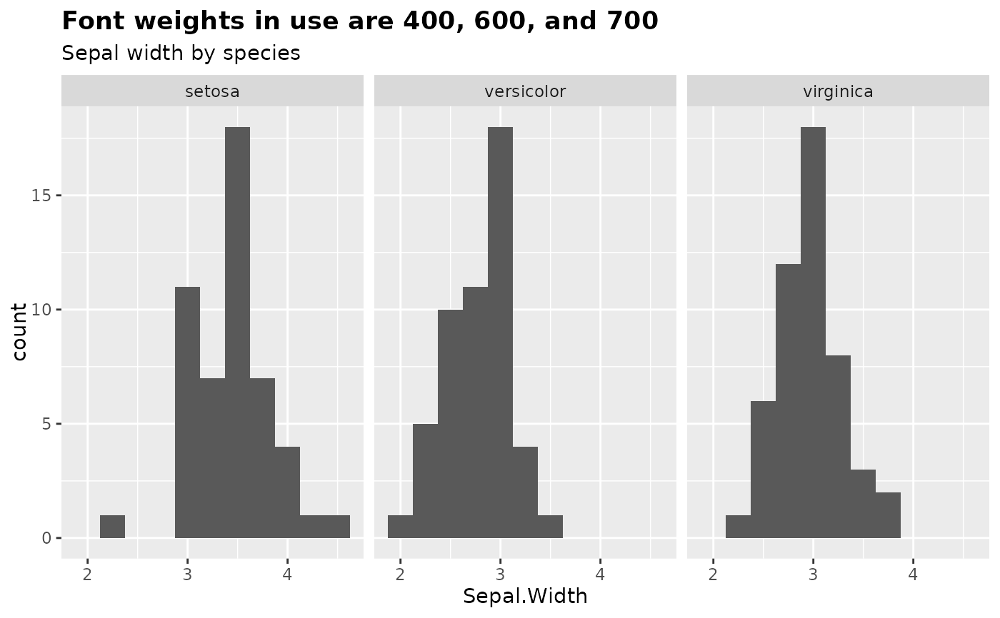

Register a set of 4 font weights for use with showtext
Source: R/font_add_weights.R
font_add_weights.RdSometimes in a longer document with lots of charts, it's good to limit how much text is very bold and instead make use of semibold font faces. font_add_weights registers a pair of fonts from Google Fonts. They're from the same family, but one will have a typical set of weights (by default, regular = 400 and bold = 700), and the other will have bolder versions (default regular = 600, bold = 900). If a weight is unavailable, nothing will be registered and a message will print with the weights available for that font family.
Value
Returns nothing, but registers fonts with sysfonts::font_add_google. Call sysfonts::font_families() to confirm that the font family is loaded.
Details
Font weights are from CSS styling, where values are multiples of 100 between 100 and 900. The defaults used here are the norms used in web typography. Not all fonts will be available in all the weights you might like, but many of the fonts on Google that are well suited to data visualization come in many weights.
Examples
library(ggplot2)
font_add_weights("Source Sans 3", black = 800)
#> ℹ Registering the following fonts:
#> • Source Sans 3 with regular weight 400 and bold weight 700
#> • Source Sans 3 Semibold with semibold weight 600 and black weight 800
showtext::showtext_begin()
showtext::showtext_opts(dpi = 150)
ggplot(iris, aes(x = Sepal.Width)) +
geom_histogram(binwidth = 0.25) +
facet_wrap(vars(Species), nrow = 1) +
labs(
title = "Font weights in use are 400, 600, and 700",
subtitle = "Sepal width by species"
) +
theme_gray(base_family = "Source Sans 3") +
theme(
plot.title = element_text(family = "Source Sans 3", face = "bold"), # 700
plot.subtitle = element_text(family = "Source Sans 3 Semibold"), # 600
strip.text = element_text(family = "Source Sans 3 Semibold")
) # 600

showtext::showtext_end()